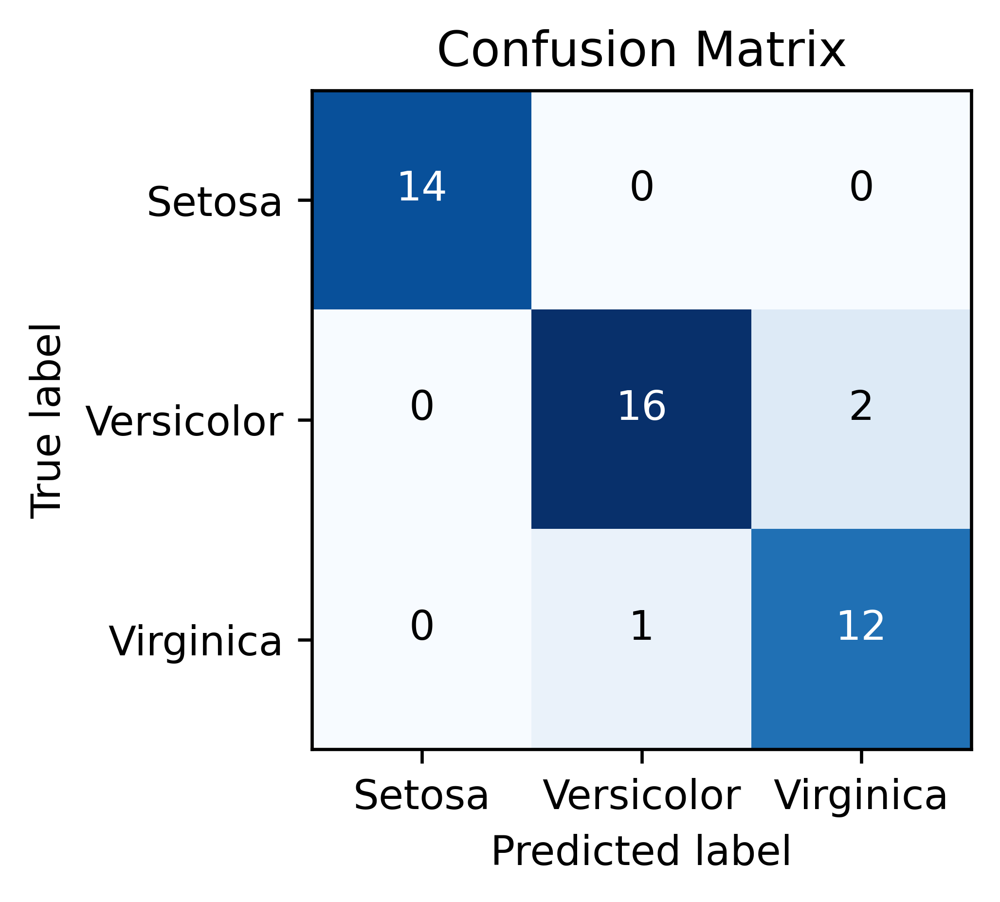
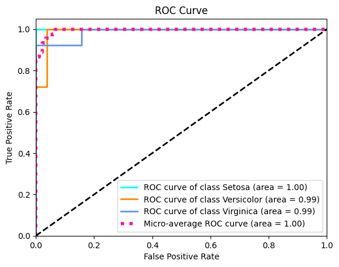
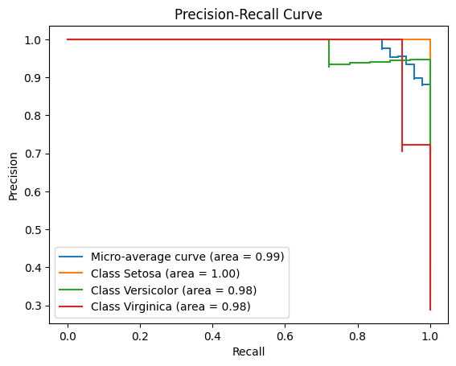

from sklearn import datasets
from sklearn.model_selection import train_test_split
from sklearn.naive_bayes import GaussianNB
from sklearn.preprocessing import label_binarize
from sklearn import metrics
from itertools import cycle
import pandas as pd
import numpy as np
import matplotlib.pyplot as plt# Loading the iris dataset
iris = pd.read_csv('datasets/iris_data.csv')
iris.head()| sepal_length | sepal_width | petal_length | petal_width | species | |
|---|---|---|---|---|---|
| 0 | 5.1 | 3.5 | 1.4 | 0.2 | Iris-setosa |
| 1 | 4.9 | 3.0 | 1.4 | 0.2 | Iris-setosa |
| 2 | 4.7 | 3.2 | 1.3 | 0.2 | Iris-setosa |
| 3 | 4.6 | 3.1 | 1.5 | 0.2 | Iris-setosa |
| 4 | 5.0 | 3.6 | 1.4 | 0.2 | Iris-setosa |
X = iris[['sepal_length', 'sepal_width', 'petal_length', 'petal_width']]
y = iris[['species']]
y = label_binarize(y, classes=['Iris-setosa', 'Iris-versicolor', 'Iris-virginica'])# Splitting the data into training and testing sets
X_train, X_test, y_train, y_test = train_test_split(X, y, test_size=0.3, random_state=1)
# Training the Gaussian Naive Bayes model
clf = GaussianNB()
clf.fit(X_train, np.argmax(y_train, axis=1))
# Making predictions and evaluating the model
y_test_pred = clf.predict(X_test)
y_test_proba = clf.predict_proba(X_test)print("Accuracy:",metrics.accuracy_score(np.argmax(y_test,axis=1), y_test_pred))
print("Precision:", metrics.precision_score(np.argmax(y_test,axis=1), y_test_pred, average='weighted'))
print("Recall:", metrics.recall_score(np.argmax(y_test,axis=1), y_test_pred, average='weighted'))
print("sensitivity:", metrics.recall_score(np.argmax(y_test,axis=1), y_test_pred, average='weighted'))
print("f1 score:", metrics.f1_score(np.argmax(y_test,axis=1), y_test_pred, average='weighted'))
print(metrics.classification_report(np.argmax(y_test,axis=1), y_test_pred, target_names = ['Setosa', 'Versicolor', 'Virginica']))Accuracy: 0.9333333333333333
Precision: 0.9352007469654529
Recall: 0.9333333333333333
sensitivity: 0.9333333333333333
f1 score: 0.933615520282187
precision recall f1-score support
Setosa 1.00 1.00 1.00 14
Versicolor 0.94 0.89 0.91 18
Virginica 0.86 0.92 0.89 13
accuracy 0.93 45
macro avg 0.93 0.94 0.93 45
weighted avg 0.94 0.93 0.93 45
cm = metrics.confusion_matrix(np.argmax(y_test,axis=1), y_test_pred)
plt.figure(figsize=(4, 3), dpi=600)
plt.imshow(cm, interpolation='nearest', cmap=plt.cm.Blues)
plt.title('Confusion Matrix')
classes = ['Setosa', 'Versicolor', 'Virginica']
tick_marks = np.arange(len(classes))
plt.xticks(tick_marks, classes)
plt.yticks(tick_marks, classes)
thresh = cm.max() / 2.
for i, j in np.ndindex(cm.shape):
plt.text(j, i, cm[i, j],
horizontalalignment="center",
color="white" if cm[i, j] > thresh else "black")
plt.tight_layout()
plt.ylabel('True label')
plt.xlabel('Predicted label')
plt.show()
# Compute ROC curve and ROC area for each class
fpr = dict()
tpr = dict()
roc_auc = dict()
for i in range(len(classes)):
fpr[i], tpr[i], _ = metrics.roc_curve(y_test[:, i], y_test_proba[:, i])
roc_auc[i] = metrics.auc(fpr[i], tpr[i])
# Compute micro-average ROC curve and ROC area
fpr["micro"], tpr["micro"], _ = metrics.roc_curve(y_test.ravel(), y_test_proba.ravel())
roc_auc["micro"] = metrics.auc(fpr["micro"], tpr["micro"])
# Plot the ROC curve
plt.figure()
lw = 2
colors = cycle(['aqua', 'darkorange', 'cornflowerblue'])
for i, color in zip(range(len(classes)), colors):
plt.plot(fpr[i], tpr[i], color=color, lw=lw,
label='ROC curve of class {0} (area = {1:0.2f})'
''.format(classes[i], roc_auc[i]))
plt.plot(fpr["micro"], tpr["micro"],
label='Micro-average ROC curve (area = {0:0.2f})'
''.format(roc_auc["micro"]),
color='deeppink', linestyle=':', linewidth=4)
plt.plot([0, 1], [0, 1], 'k--', lw=lw)
plt.xlim([0.0, 1.0])
plt.ylim([0.0, 1.05])
plt.xlabel('False Positive Rate')
plt.ylabel('True Positive Rate')
plt.title('ROC Curve')
plt.legend(loc="lower right")
plt.show()
precision = dict()
recall = dict()
average_precision = dict()
for i in range(len(classes)):
precision[i], recall[i], _ = metrics.precision_recall_curve(y_test[:, i], y_test_proba[:, i])
average_precision[i] = metrics.average_precision_score(y_test[:, i], y_test_proba[:, i])
# Compute micro-average precision-recall curve
precision["micro"], recall["micro"], _ = metrics.precision_recall_curve(y_test.ravel(), y_test_proba.ravel())
average_precision["micro"] = metrics.average_precision_score(y_test, y_test_proba, average="micro")
# Plot Precision-Recall curve for each class
plt.figure()
plt.step(recall['micro'], precision['micro'], where='post', label='Micro-average curve (area = {0:0.2f})'
''.format(average_precision["micro"]))
for i in range(len(classes)):
plt.step(recall[i], precision[i], where='post', label='Class {0} (area = {1:0.2f})'
''.format(classes[i], average_precision[i]))
plt.xlabel('Recall')
plt.ylabel('Precision')
plt.title('Precision-Recall Curve')
plt.legend(loc="best")
plt.show()

